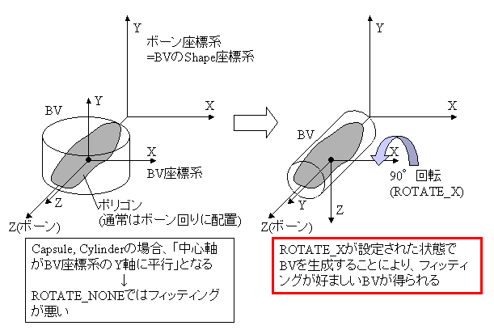

com.nttdocomo.ui.graphics3d.collision.BVBuilder
com.nttdocomo.ui.graphics3d.collision.BVBuilder
|
||||||||||
| 前のクラス 次のクラス | フレームあり フレームなし | |||||||||
| 概要: 入れ子 | フィールド | コンストラクタ | メソッド | 詳細: フィールド | コンストラクタ | メソッド | |||||||||
Object
次の機能があります。
BoundingVolumeを生成する
BVFigureオブジェクトを生成する
BoundingVolumeが付加されていない、ボーン構造だけを持つBVFigureオブジェクトを生成
(createBVFigureメソッド)
BoundingVolumeが付加された、ボーン構造を持つBVFigureオブジェクトを生成
(createBVFigureメソッド)
BoundingVolumeを生成する
Figure全体のBoundingVolumeとしては、OBV、AABVの両方が使用可能ですが、BVFigureの各ボーンに
設定可能なBoundingVolumeは、OBVだけです。
BoundingVolumeオブジェクト生成において、アクションは考慮されません。Figureオブジェクト自体
が持つ基本姿勢から生成されます。
| メソッドの概要 | |
static BoundingVolume |
createBoneBV(Figure fig,
int boneId,
int pattern,
int shapeType,
float fit,
int rotate)
Figureオブジェクトから、指定したボーンの BoundingVolume(OBV)オブジェクトを生成します。 |
static BoundingVolume |
createBV(Figure fig,
int pattern,
int shapeType,
float fit)
Figureオブジェクトから、Figure全体の BoundingVolumeオブジェクトを生成します。 |
static BVFigure |
createBVFigure(Figure fig)
Figureオブジェクトから、ボーンに BoundingVolumeオブジェクトが付加されていないBVFigure
オブジェクトを生成します。
|
static BVFigure |
createBVFigure(Figure fig,
int shapeType,
float fit)
Figureオブジェクトから、すべてのボーンに BoundingVolume(OBV)
オブジェクトが付加されたBVFigureオブジェクトを生成します。 |
| クラス Object から継承したメソッド |
equals, getClass, hashCode, notify, notifyAll, toString, wait, wait, wait |
| メソッドの詳細 |
public static BVFigure createBVFigure(Figure fig)
Figureオブジェクトから、ボーンにBoundingVolumeオブジェクトが付加されていないBVFigure
オブジェクトを生成します。
生成されたBVFigureオブジェクトには、Figure全体のBoundingVolumeオブジェクトも付加
されていません。BVFigureクラスのsetBVメソッドを使って、Figure全体のBoundingVolume
オブジェクト、ボーンのBoundingVolumeオブジェクトをセットして下さい。
fig - Figureオブジェクトを指定します。
BVFigureオブジェクトを返します。
NullPointerException - 引数figがnullの場合に発生します。
UIException - 引数figが既に dispose() されたオブジェクトの場合に発生します(ILLEGAL_STATE)。
IllegalStateException - 引数figが、ActionTableを付加できないFigureの場合に発生します。
public static BVFigure createBVFigure(Figure fig,
int shapeType,
float fit)
Figureオブジェクトから、すべてのボーンにBoundingVolume(OBV)
オブジェクトが付加されたBVFigureオブジェクトを生成します。
すべてのボーンのBoundingVolumeオブジェクトを、パターン0について生成します。
ただし、ポリゴンが存在しないボーンについてはBoundingVolumeオブジェクトは生成されず、
nullが設定されます。
生成されたBVFigureオブジェクトには、Figure全体のBoundingVolumeオブジェクトは付加
されていません。BVFigureクラスのsetBVメソッドを使って、Figure全体のBoundingVolume
オブジェクトをセットして下さい。
また、ボーンからBoundingVolumeオブジェクトを除去する場合は、BVFigureクラスのsetBVメソッド
でnullをセットしてください。
Capsule、Cylinderの場合、中心軸がBV座標系のY軸に平行になるように
BoundingVolumeオブジェクトが生成されますが、ボーン座標系(Shape座標系)ではZ軸がボーンとなるので、
BoundingVolumeにBoundingVolume.ROTATE_Xが設定された状態(X軸回りに90度回転させた状態)
で、
ボーン座標系のZ軸に平行になるようにBoundingVolumeオブジェクトを生成します。

ボーン座標系の他の軸に平行になるように生成したい場合は、createBoneBVメソッドを使って
ボーンごとに生成してください。
Box、Sphereの場合は、回転させない状態(BoundingVolume.ROTATE_NONE)でBoundingVolumeオブジェクト
を生成します。
いずれのBoundingVolumeの場合も、中心位置がBoundingVolumeにセットされます。
fig - Figureオブジェクトを指定します。shapeType - 生成するOBVタイプを指定します。Shape.TYPE_BOX、Shape.TYPE_CAPSULE、Shape.TYPE_CYLINDER、
Shape.TYPE_SPHEREのいずれかを指定します。fit - 最小Fittingを基準にしたFittingの割合を指定します。BVFigureオブジェクトを返します。
NullPointerException - 引数figがnullの場合に発生します。
UIException - 引数figが既に dispose() されたオブジェクトの場合に発生します(ILLEGAL_STATE)。
IllegalArgumentException - 引数shapeTypeが、Shape.TYPE_BOX、Shape.TYPE_CAPSULE、Shape.TYPE_CYLINDER、Shape.TYPE_SPHERE以外の場合に発生します。
IllegalArgumentException - 引数fitが、0.1未満または10を超える場合に発生します。
IllegalStateException - 引数figが、ActionTableを付加できないFigureの場合に発生します。
public static BoundingVolume createBoneBV(Figure fig,
int boneId,
int pattern,
int shapeType,
float fit,
int rotate)
Figureオブジェクトから、指定したボーンのBoundingVolume(OBV)オブジェクトを生成します。
パターンを指定することができます。
指定したボーンにポリゴンが存在しない場合、BoundingVolumeオブジェクトは生成されず、
nullを返します。
Capsule、Cylinderの場合、中心軸がBV座標系のY軸に平行になるように
BoundingVolumeオブジェクトが生成されますが、ボーン座標系(Shape座標系)ではZ軸がボーンとなるので、
一般的にはX軸回りに90度回転させた状態でBoundingVolumeオブジェクト
を生成するように、引数rotateにBoundingVolume.ROTATE_Xを指定します。これにより、
ボーン座標系のZ軸に平行になるようにBoundingVolumeオブジェクトが生成されます。
Capsule、Cylinderの場合は、この他に、引数rotateにBoundingVolume.ROTATE_NONE(ボーン座標系のY軸に平行)、
BoundingVolume.ROTATE_Z(ボーン座標系のX軸に平行)を指定することができます。
Box、Sphereの場合は、引数rotateにBoundingVolume.ROTATE_NONEだけが指定可能です。
いずれのBoundingVolumeの場合も、中心位置がBoundingVolumeにセットされます。
生成されたOBVオブジェクトは、BVFigureクラスのsetBVメソッドを使って、BVFigureオブジェクトに
セットする必要があります。
fig - Figureオブジェクトを指定します。boneId - 生成する対象のボーンIDを指定します。pattern - 生成する対象のパターンを指定します。FigureクラスのsetPatternメソッドの説明
を参照してください。shapeType - 生成するOBVタイプを指定します。Shape.TYPE_BOX、Shape.TYPE_CAPSULE、Shape.TYPE_CYLINDER、
Shape.TYPE_SPHEREのいずれかを指定します。fit - 最小Fittingを基準にしたFittingの割合を指定します。rotate - ボーン座標系(Shape座標系)における、BV座標系の回転変換を指定します。
shapeTypeが